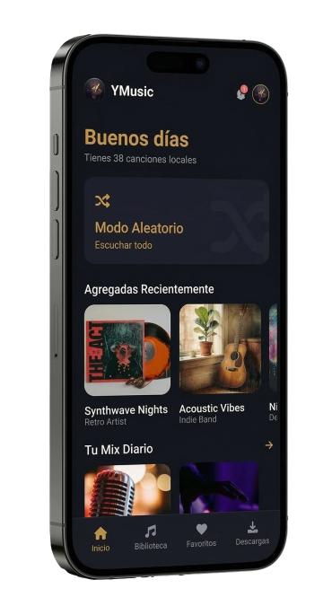

Organiza tu biblioteca local y descarga audio de sitios compatibles directamente a tu dispositivo. Una herramienta rápida, con modo oscuro y sin interrupciones publicitarias.
Descargar APK (Versión 1.3.7.b)
El motor de escaneo separa la lectura de metadatos y portadas. Esto permite que la aplicación inicie al instante, sin importar el tamaño de tu colección musical.
Diseño basado en un tema oscuro profundo con acentos en color oro. Desarrollado para reducir la fatiga visual y facilitar la navegación por tus listas de reproducción.
Guarda archivos de audio de plataformas compatibles en tu almacenamiento local. Escucha tu contenido sin conexión a internet en el momento que quieras.
El sistema detecta nuevas versiones y te guía en la instalación. Además, limpia automáticamente los instaladores antiguos para no saturar la memoria de tu teléfono.